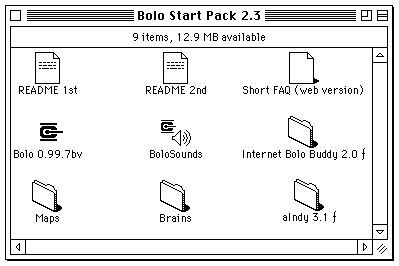
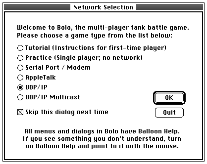
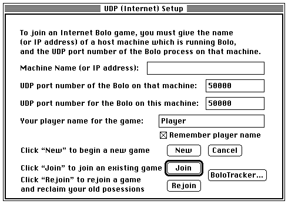
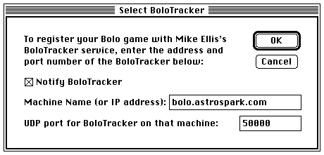
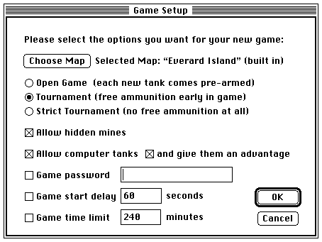
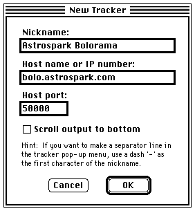
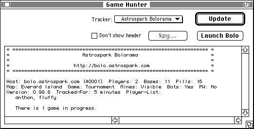
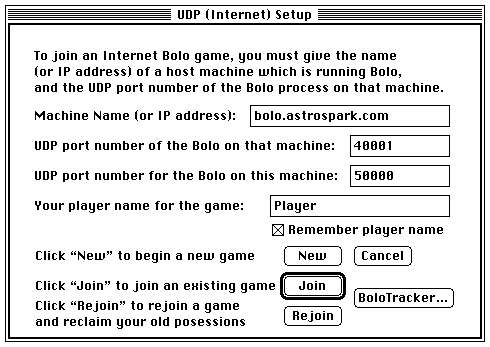

Astrospark Bolorama allows you to play Bolo with other players over the internet without changing any firewall settings. This page is designed to be accessible from vintage Macintosh computers running contemporary browsers.
Configure Bolo
Start a New Game
Configure Internet Bolo Buddy
Join an Existing Game
To play Bolo over the internet with Bolorama, you will need Bolo 0.99.7 (or 0.99.7bv) and a Bolo tracker such as Internet Bolo Buddy. We recommend Bolo Start Pack 2.3 which includes both Bolo and Internet Bolo Buddy along with several brains and additional maps.
You only need to configure Bolo once. Open Bolo. On the Network Selection dialog, select UDP/IP. Check the Skip this dialog next time box and click the OK button.
On the UDP (Internet) Setup dialog, enter your name in the Your player name for the game box. Check the Remember player name box and click the BoloTracker button.
In the Machine Name (or IP address) box, type bolo.astrospark.com and click the OK button.
Open Bolo. On the UDP (Internet) Setup dialog, click the New button.
Configure the game options as you would like and click the OK button.
You only need to configure Internet Bolo Buddy once. Open Internet Bolo Buddy. Click the Edit menu and select Preferences. In the dropdown box at the top of the Preferences dialog, select Game Hunter. In the Nickname box, type Astrospark Bolorama. In the Host name or IP number box, type bolo.astrospark.com and click the OK button.
Open Internet Bolo Buddy. Make sure Astrospark Bolorama is selected in the Tracker dropdown box and click the Update button.
Find the game you want to join in the list and double click on it. Bolo will start and the connection information will automatically be filled in. Click the Join button.
